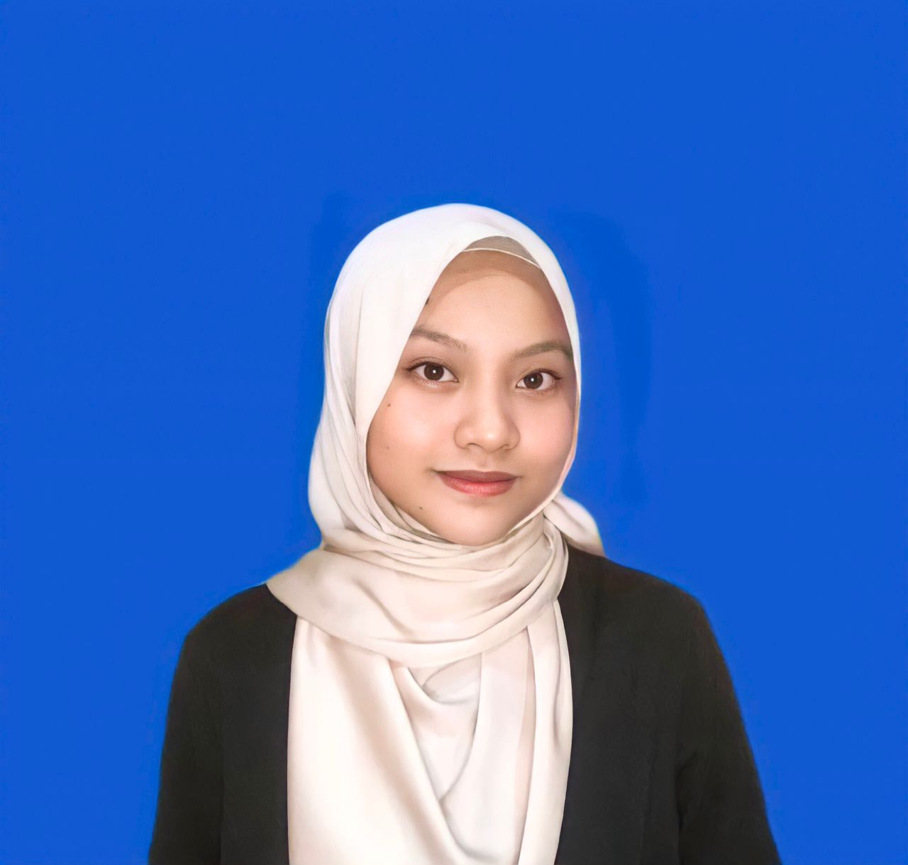

Individual Assignment IMS456

| Name | Nur Najehah binti Kamarudin |
| Age | 22 Years Old |
| Date of Birth | 14 April 2001 |
| Place of Origin | Setiu, Terengganu |
| Address | Lot 5111, Kg Seri Aman, Sungai Tong, 21500, Setiu, Terengganu |
| Occupation | Student |
| Maritial Status | Single |
| Nationality | Malay |
| Religion | Islam |
| Numbers of Siblings | 4 |
| Favourite Food | Ayam Penyet |
| Favourite Drink | Vanilla Latte |
| Hobbies | Reading |
| Ambition | Business Woman |
| Favourite Quotes | Progress, not perfection |